About this guide. This manual explains everything you need to run SeventhSlide for a service: from preparing songs ahead of time to controlling the screens live. You do not need any prior experience with presentation software. Read Chapter 1 first; after that, each chapter stands on its own.
Throughout the guide, the names of on-screen buttons and panels are set in small capitals, and keys you press look like this.
A contemporary worship service requires an effective way to display lyrics, scripture, images, and videos across projectors, reinforcement displays, foldback displays, live stream graphics, and more. Finding a software to manage all these sources and destinations, while also producing a tasteful output, is difficult. Some offerings exist, but they tend to be either needlessly expensive subscriptions or are feature starved, rendering them obsolete. SeventhSlide aims to meet all these needs for free while remaining unintimidating for the end user by relying on one intuitive control window.
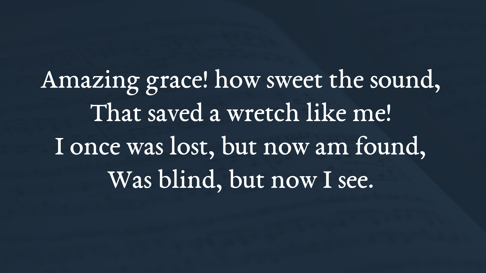
In SeventhSlide, you can prepare ahead of time by collecting the songs, scripture references, and announcements you will need into a service, an ordered list like a printed order of worship. When the worship service begins, you click through that list and SeventhSlide sends each line to the screens. In cases which require more spontaneity, such as a youth group meeting or camping event, SeventhSlide is also capable of loading media on the fly. Either approach is ready to use depending on your needs.
SeventhSlide also serves its control window to a web browser. On another device on the same network, open http://this-computer:49777/admin, using the host computer's network address. This is handy if you prefer to operate from a tablet or other separate device on the same network.
The window is divided into three columns. You will spend almost all of your time moving between them, so it is worth learning what each one does.
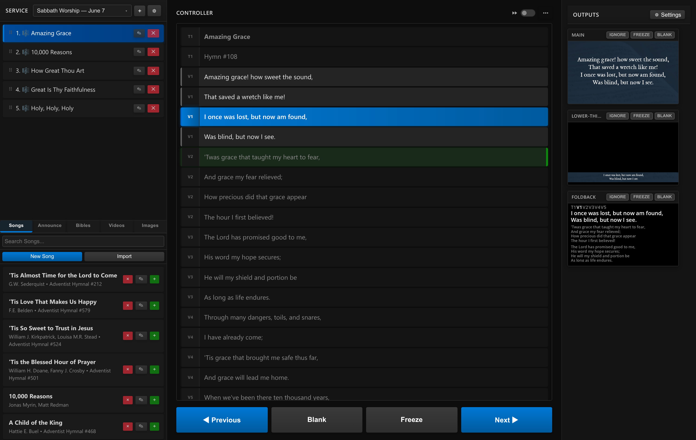
The picture on the right updates the instant you change anything. If you are ever unsure what is on the screens, glance at the right column. It never lies.
A service is simply your order of worship: the songs, readings and notices for one service, listed in the order you will use them. You build it in the top-left panel, usually before the service begins.
At the top of the left column is the Service menu. Click the wide button (it shows the current service name) to open the list.
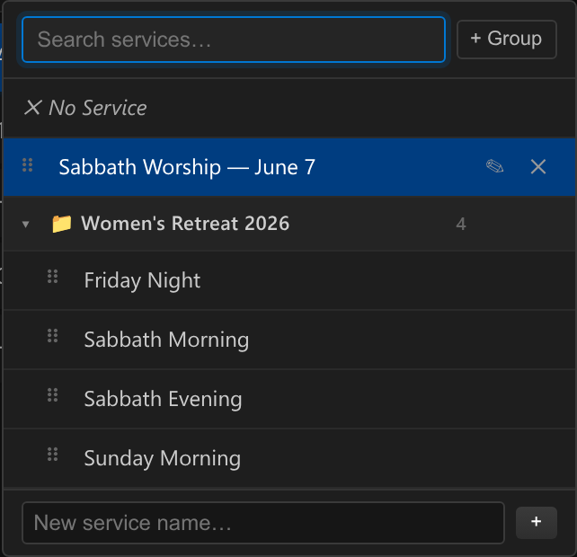
Everything you place in a service comes from the Library in the lower-left panel. Each item in the Library has a small green + button. Clicking it adds that item to the end of the current service.
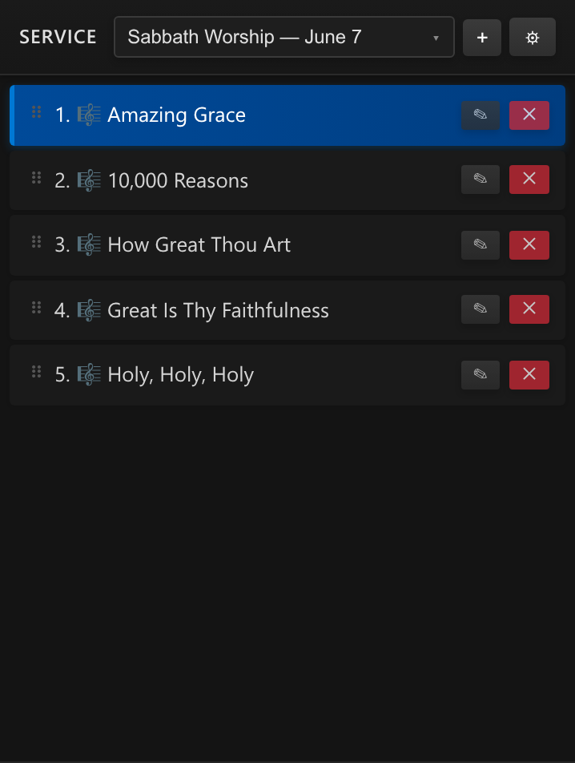
You can add songs, Bible passages, announcements, images and videos this way. Chapters 3 through 7 explain each kind of material in turn.
The + button beside the service name opens a small menu:
The gear ⚙ beside the service name opens Service Options, where you can choose a different look for this particular service. That is covered in Chapter 9.
The Library is your permanent collection. Songs you add here stay available for every future service, so most of your preparation is done once and then simply reused.
Open the Songs tab in the lower-left panel. Type any part of a title or author into the search box and the list narrows as you type.
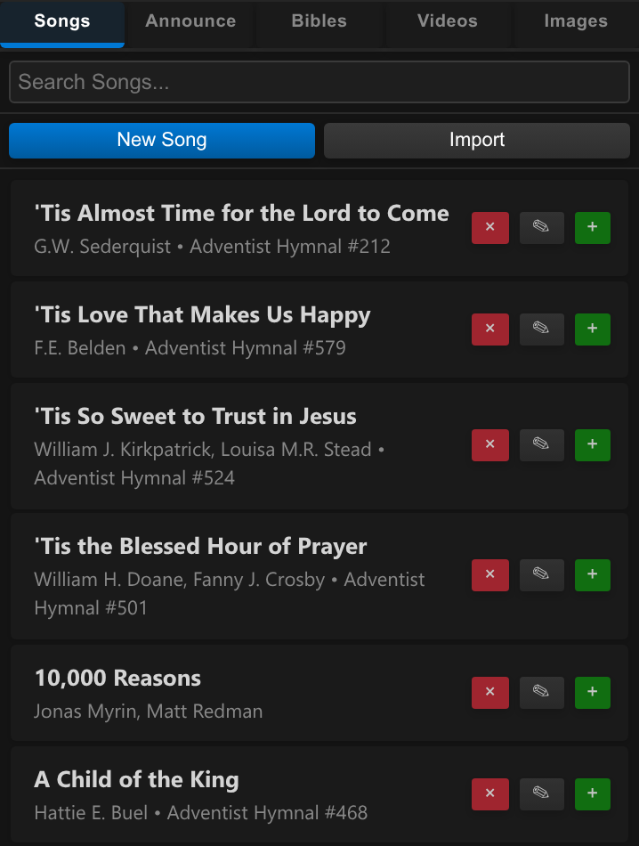
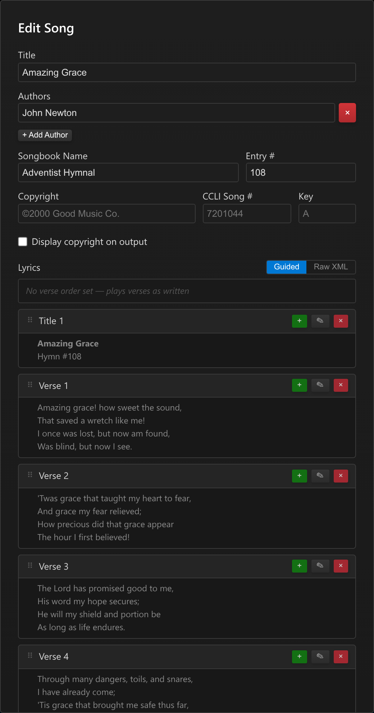
The lyrics area has two modes, chosen by the toggle at its top-right:
If you already have songs in the common .xml song format (such as OpenLyrics files exported from other programs), click Import, then choose one or more files. They are added to your Library at once.
To add several songs to a service quickly, tick the box on each song row to select them, then use Add to Service in the bar that appears at the bottom of the list.
The red × on a Library row deletes the song from your collection permanently. To take a song out of the running order without deleting it, use the red × in the Service panel instead (Chapter 2).
The Controller, in the center of the window, is where you work during the service. Whatever you do here appears on the screens straight away, so this is the chapter to be comfortable with before your first service.
Click any item in the Service panel. Its contents open in the Controller as a list of lines, one for each thing that can be shown on screen. This list is sometimes called the slide map.
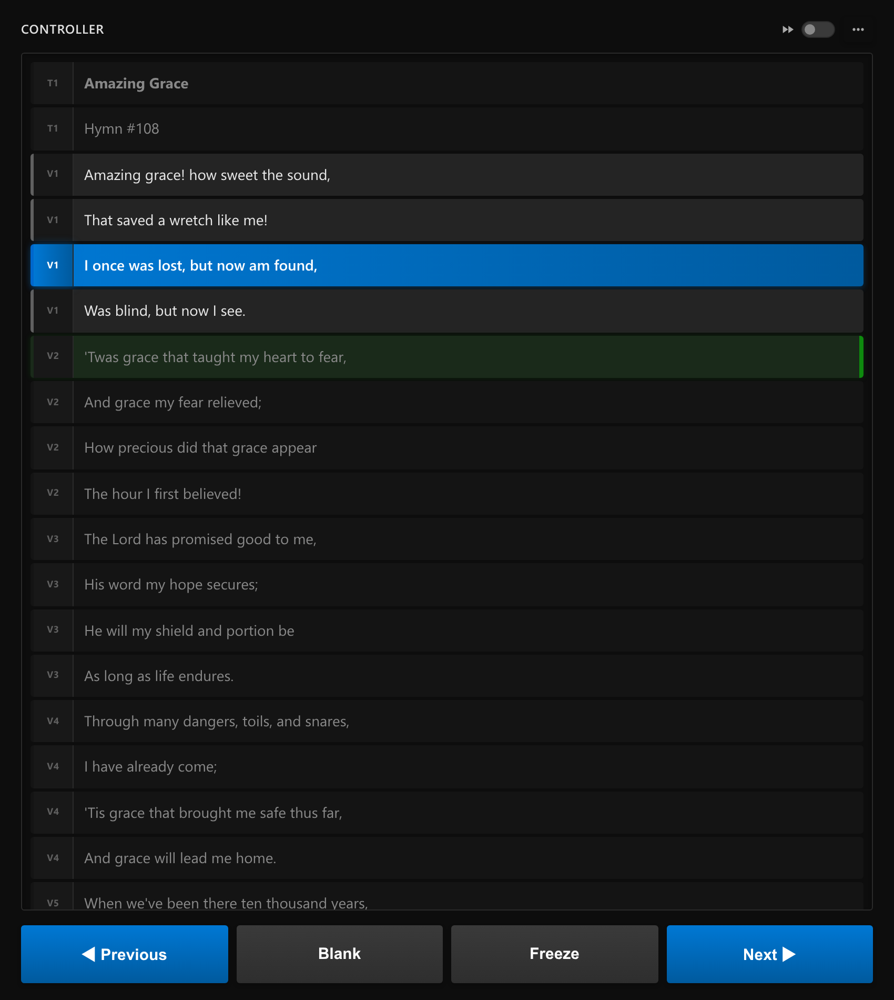
The small labels down the left edge tell you what each line is:
There are three ways to advance, and you may mix them freely:
A remote presentation clicker that sends Page Up and Page Down will drive SeventhSlide perfectly. This is handy for presenters wishing to control their own slides.
Two buttons let you take command of the screens at any moment:
These two buttons act on all of your screens at once. (To blank or freeze a single screen on its own, see Chapter 8.)
Press F to freeze or unfreeze every screen, and B to blank or unblank, without reaching for the mouse. Press the same key again to return to normal. (These keys are ignored while you are typing in a box, so they won’t get in your way.)
For an unattended slideshow (a pre-service loop of announcements, say), turn on Auto-advance using the play-shaped switch at the top of the Controller. The gear beside it opens the timing options.
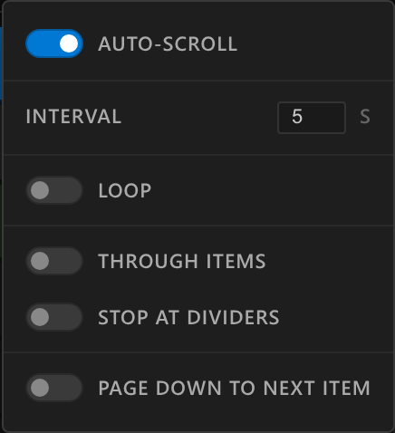
SeventhSlide can display Bible passages directly, without your having to type them out. Choose the translation, the book, the chapter and the range of verses, and the passage is ready to project.
Open the Bibles tab in the lower-left panel.
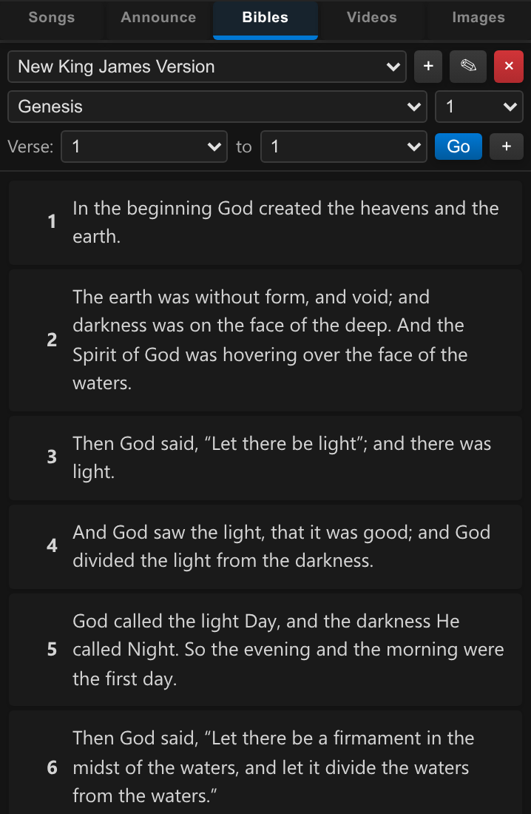
The verses of the chosen chapter are listed below, so you can read them before deciding on a range.
Use the small + beside the translation drop-down to import a Bible in .xml format. The pencil renames a translation and the red × removes one.
Once a passage is in your service, it behaves like any other item: select it in the Controller and step through the verses with Next and Previous, just as you would a song.
Announcements are short notices (a welcome, a reminder, a theme for the day) that you compose once and reuse. Each one can follow a chosen layout so your notices look consistent.
Open the Announce tab in the lower-left panel and click + New Announcement. Give it a title and its text, choose a layout, and save.
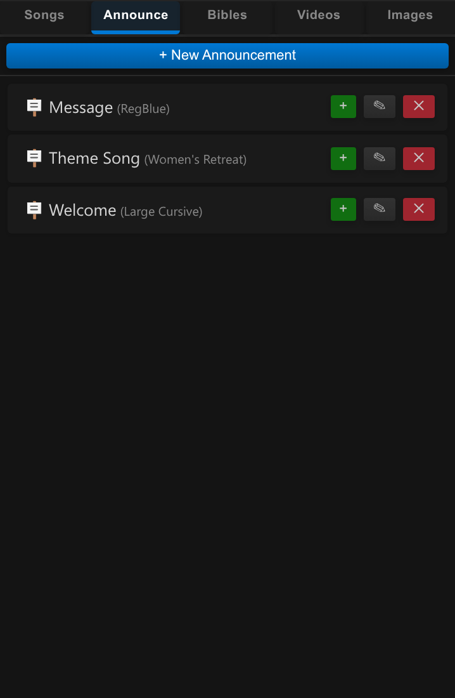
Each announcement row works like every other Library item:
The layout of an announcement, where the text sits and how it looks, is defined by a template. You can create and adjust these templates from a screen’s settings; see Chapter 9.
Photographs and video clips are added to your Library and can then be used in a service just like songs. Common service uses include slide presentations imported from PowerPoint, Keynote, LibreOffice Impress, or other software that supports image export; Mission Spotlight videos; and the general display of graphics and visual media.
Open the Images tab. Click Upload Images to bring pictures in from your computer; you may select several at once.
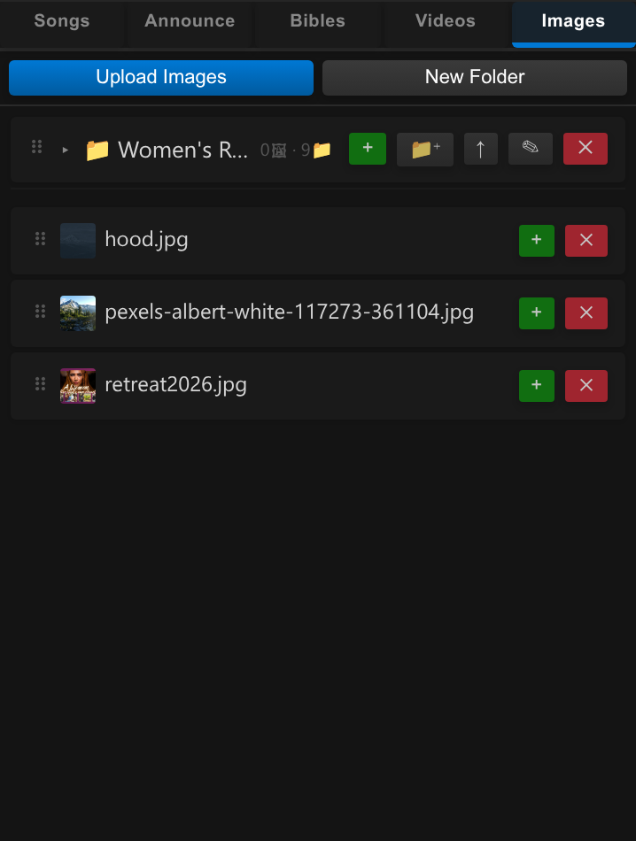
Open the Videos tab and click Upload Video. Once a video is in your service and selected in the Controller, play controls appear:
For a looping welcome slideshow, add your images (or a folder of them) to the service, then turn on Auto-advance with Loop switched on (Chapter 4).
An output is one destination for your presentation: a projector, a television, a stage monitor, or a feed for the livestream. SeventhSlide can drive several at the same time, each with its own look, and the right-hand column shows you a live picture of every one.
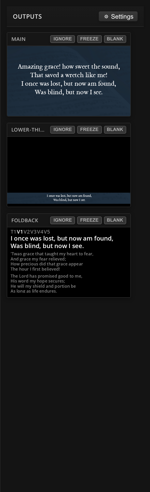
Across the top of each output’s thumbnail are three buttons that affect that screen alone:
Remember the difference: the Blank and Freeze buttons in the center Controller act on every screen; these act on a single screen.
Beneath each output’s thumbnail is a small strip for placing that output on a physical monitor, such as your projector or a stage television.
SeventhSlide remembers these choices, so the same outputs return to the same monitors the next time you start the program. If a monitor is unplugged its output simply waits, and reappears when the monitor is connected again.
Beside the Send button is a small speaker button. It controls whether the sound of a video plays through that monitor:
Because the local computer will likely drive computer audio for the main speaker mix in the church/venue, it is important to manage which outputs drive sound out of the local computer. Leaving all outputs enabled might mean duplicate audio output, highly unideal for live use. Because of this, muting a screen here affects only this computer’s own output; a web browser or browser source watching the same output is left playing as before.
This strip appears only in the SeventhSlide desktop program, which is the part that can place windows on particular monitors. When you operate from a web browser instead (see Chapter 1), the screens are driven by whichever computer the browser tab is open on.
Click ⚙ Settings at the top of the right column. The list of outputs appears, where you can reorder them, edit them, delete them, or click + Add Output to create a new one.
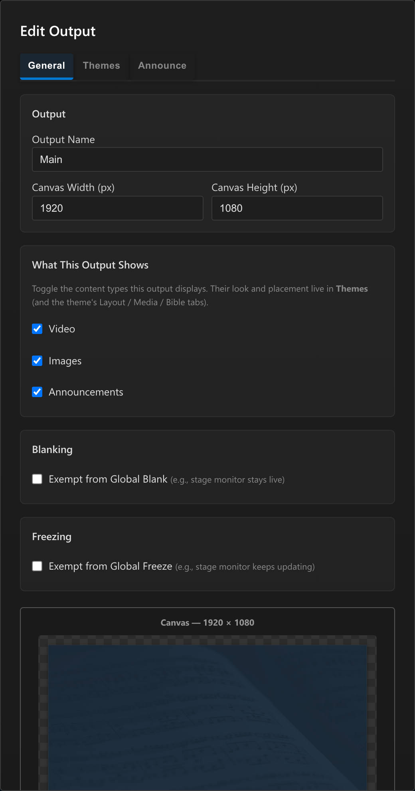
The General tab holds the settings that belong to the screen itself:
How each output looks (its fonts, colors, background and the position of the words) is not set here. That lives in themes, the subject of the next chapter.
A theme is a saved look. By keeping appearance separate from content, SeventhSlide lets you design a style once and then apply it to any song, reading or service, and change it everywhere at the press of a button.
There are two kinds of theme, and they combine:
Open an output (⚙ Settings → Edit) and choose the Themes tab.
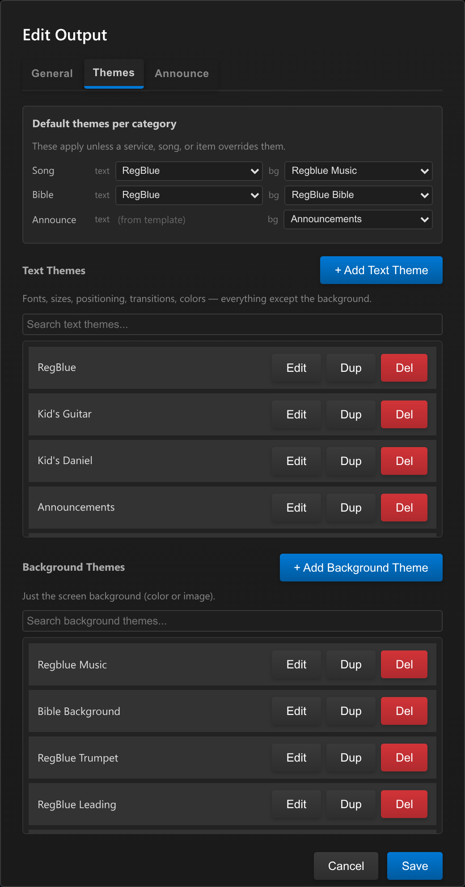
The panel at the top, Default themes per category, sets which theme is used for each kind of content unless something overrides it. Below that are your lists of text themes and background themes; each has Edit, Dup (duplicate) and Del buttons, and + Add buttons to create new ones.
Click Edit on a text theme to open its settings, which are arranged on tabs. A live Canvas Preview at the foot of the dialog shows your changes as you make them.
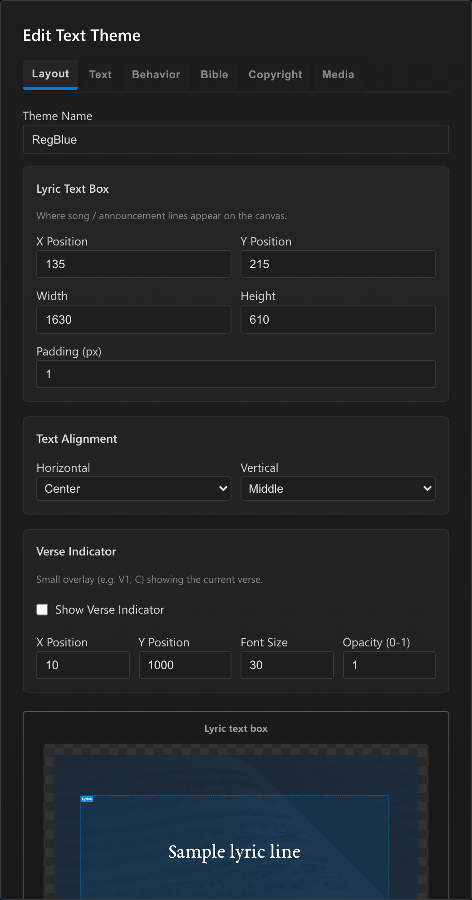
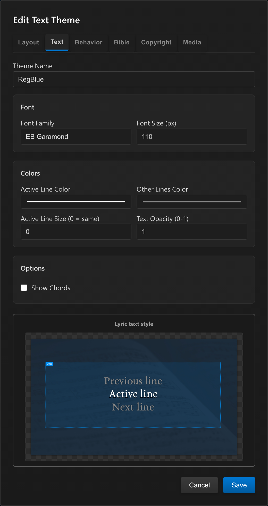
A background theme has a single Background tab: choose a solid color, or pick an image to fill the screen behind the words.
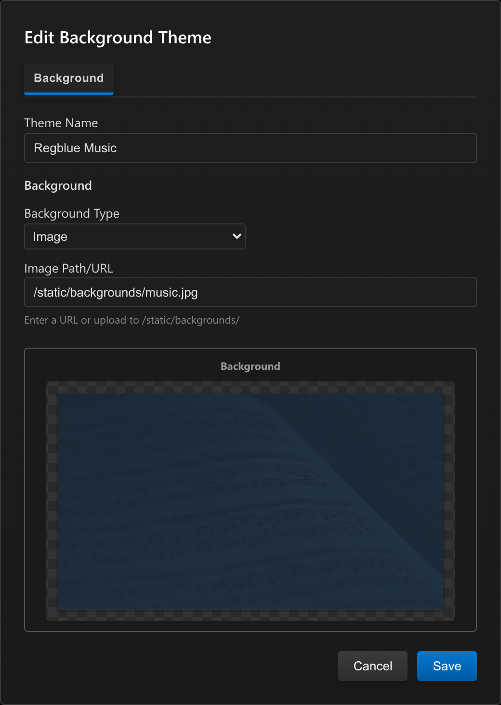
Sometimes a single event needs its own styling (a special evangelistic series, perhaps). Open the ⚙ gear beside the service name to reach Service Options, and choose which theme each output should use for this service only. Other services are untouched.
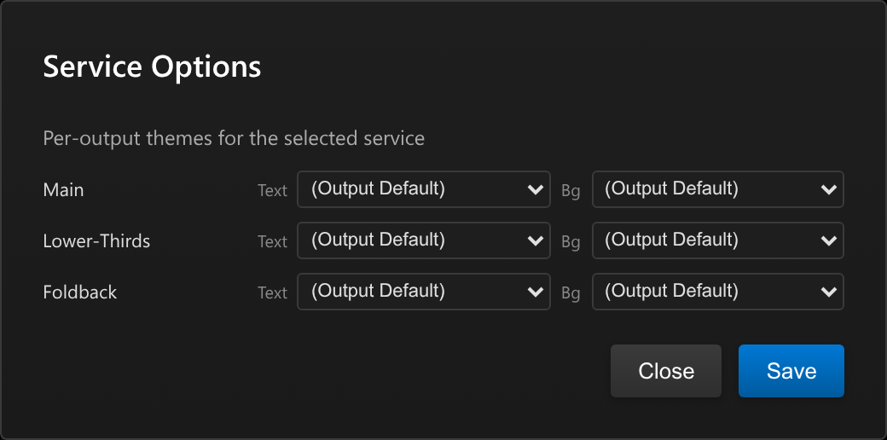
Different screens can wear different themes at the same time. The example used throughout this guide drives a full-screen Main output, a Lower-Thirds caption bar for the livestream, and a plain Foldback monitor for the platform presenters.
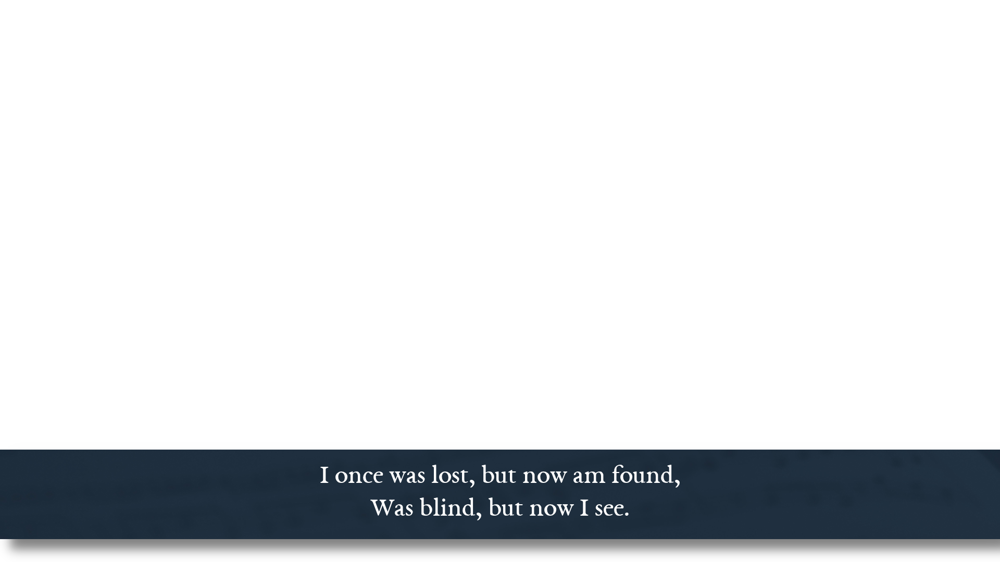
A few settings apply to the program as a whole. You will normally set these once, when you first install SeventhSlide, and rarely touch them again.
Click ⚙ Settings at the top of the right-hand column to open the settings dialog. (This is the same dialog that lists your outputs, from Chapter 8.)
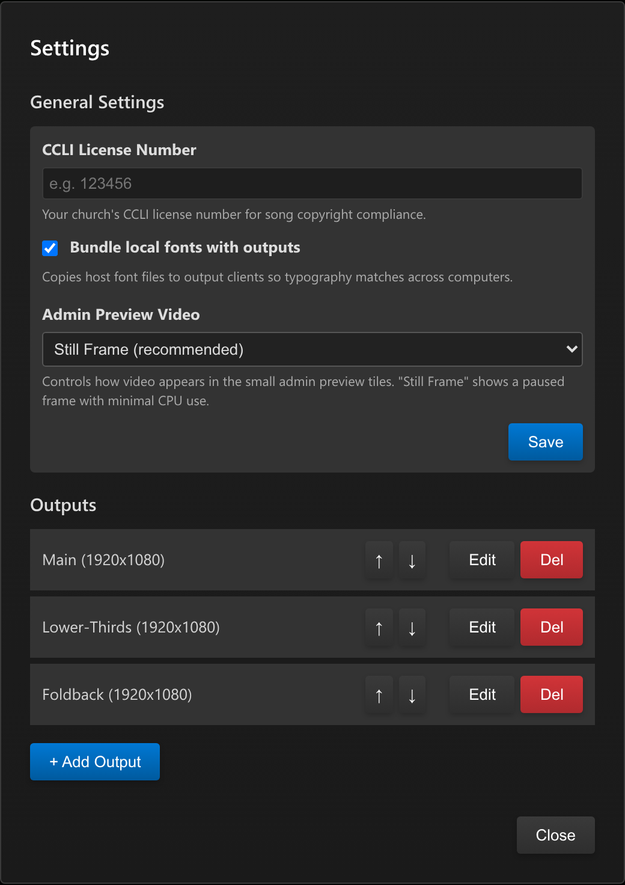
Click Save to keep your changes, then Close.
A summary to keep beside the operator’s seat.
| Key | Action |
|---|---|
| → ↓ Page Down | Next line / slide |
| ← ↑ Page Up | Previous line / slide |
| Click a line | Send that line to the screens at once |
| F | Freeze or unfreeze all screens |
| B | Blank or unblank all screens |
| Esc | Close the current dialog |
| Column | Holds |
|---|---|
| Left | The Service (running order) above; the Library of songs, Bibles, announcements, images and video below. |
| Center | The Controller, the slide map you click through live, with Blank and Freeze. |
| Right | Outputs, a live picture of every screen, each with Ignore, Freeze and Blank. |
| Control | Effect |
|---|---|
| Blank (center) | Hide content on all screens. Press again to restore. |
| Freeze (center) | Hold the current frame on all screens while you prepare ahead. |
| Ignore / Freeze / Blank (a thumbnail) | The same, but for that one screen only. |
| Send / Stop (a thumbnail) | Place that output fullscreen on a chosen monitor, or take it back. Desktop program only. |
| Speaker (a thumbnail) | Mute or unmute a video’s sound on that monitor, without affecting other devices. |
| Auto-advance | Step through slides on a timer (the play switch atop the Controller). |